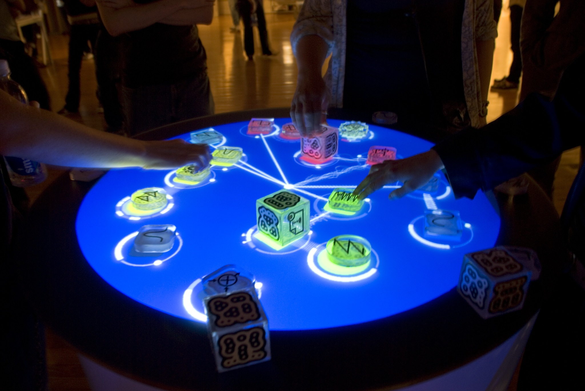
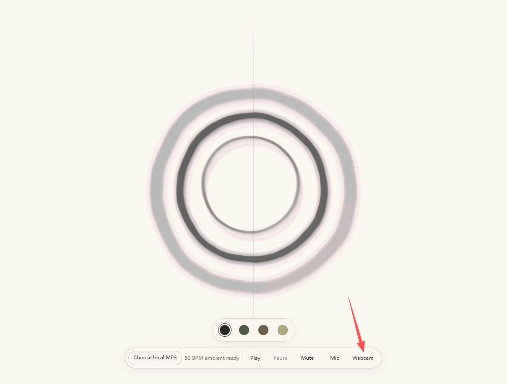
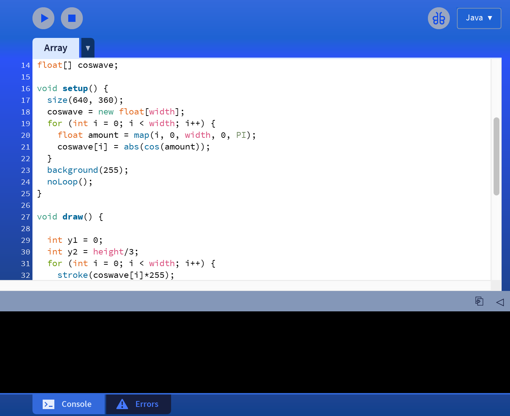
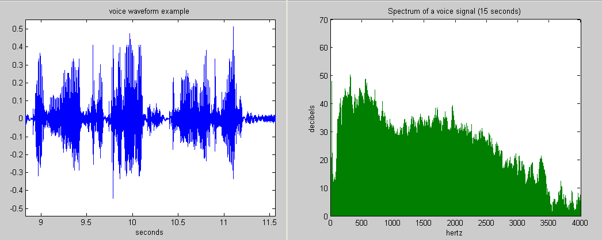
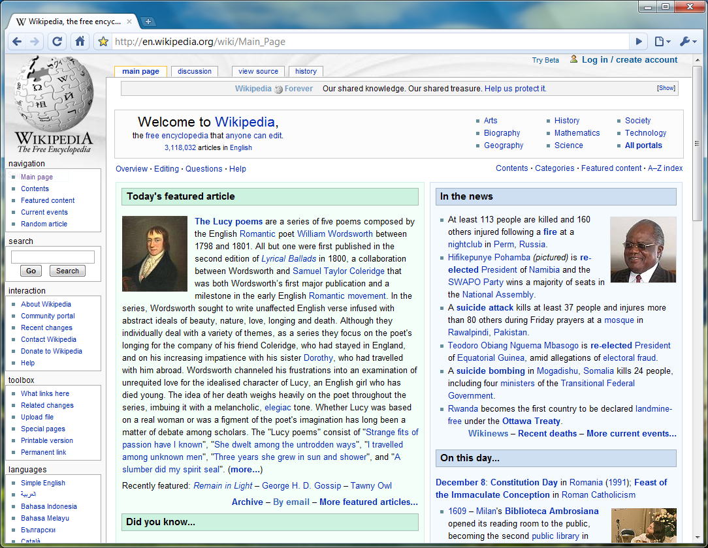

课堂案例 · VIMEO
聆听 → 观察 → 设计
播放器空白时，打开原视频 ↗
选定案例
音乐，可被看见
先完整观看这段选定的 Vimeo 案例，感受整体体验；再看一遍，找出一次声音变化，并描述画面随之发生了什么。区分你实际看到的现象，以及你对背后系统的推测。
观看任务
如果制作自己的可视化软件，你会选哪种声音事件作为输入？怎样的画面反馈能让观众看懂这个选择？
本课程选用的 Vimeo 视频；播放需要网络连接。
中国传媒大学国际传媒教育学院 · 音乐可视化
音乐可视化 · 交互创作工作坊
录音、人声与动作可以转译成色彩和运动。在这节课里，你先判断画面应呈现音乐的哪些特征，再用 Google AI Studio 逐步做出可交互的浏览器作品，并在每一步亲自验证。
从聆听走向观看
从一次重拍、一口呼吸或一次音色变化开始。先判断它为什么重要，再决定色彩、形状和运动如何回应。
看声音如何转译为画面 ↓01 / 概念
音乐可视化把随时间变化的声音特征与表演动作转译为动态图像。它既能帮助我们观察波形、频谱和节奏，也能成为与听众共同参与的视觉作品。音乐人仍然决定哪些声音事件重要，以及它们应该如何呈现。
选定案例
先完整观看这段选定的 Vimeo 案例，感受整体体验；再看一遍，找出一次声音变化，并描述画面随之发生了什么。区分你实际看到的现象，以及你对背后系统的推测。
如果制作自己的可视化软件，你会选哪种声音事件作为输入？怎样的画面反馈能让观众看懂这个选择？
本课程选用的 Vimeo 视频；播放需要网络连接。
02 / 历程

在预先渲染的视频流程中，动态图形设计师可把音频转换成音量关键帧或频谱图形，再逐镜头修整和导出。右图是 After Effects 模板案例。
Adobe After Effects ↗ 模板案例 ↗
现场视觉师（VJ）和演出视觉团队利用 BPM、音频分析、控制器及时间码，使影像在现场与演出同步变化。右图记录了罗莎·门克曼与钢琴家尼尔斯·弗拉姆的即兴现场。
Resolume 音频分析 ↗
庞培法布拉大学团队自 2003 年研发 Reactable，并于 2005 年首次公开演出。演奏者移动实体模块、触碰发光桌面，实时改变电子声音；桌面图形也让声音模块之间的联系变得可见。
庞培法布拉大学 ↗
Web Audio API 可以把时域和频域数据送给 Canvas 画布；Google AI Studio 的 Build 模式让音乐人通过逐轮提示快速制作网页原型。右图所示的水墨原型可以在下方直接交互体验。
MDN 技术文档 ↗ Google AI Studio ↗
03 / AI 时代之前
以上是典型制作岗位，一人也可能兼任多职。在交互作品中，观众的动作与演奏者的声音可以成为系统输入。
AI 辅助编程让你先亲手验证映射，再交给制作团队扩展。音乐判断、视觉设计、无障碍体验和技术检查依然需要人的参与。
04 / 动手制作
打开 Google AI Studio ↗，进入 应用构建（Build） 并选择网页应用。每次只提出一项可验证的改动；每轮检查预览和代码页面，确认可用后下载项目 ZIP。应用构建模式可能生成多文件 React 应用，请保留已经运行正常的项目结构。
课堂收获
面向中国传媒大学国际传媒教育学院课堂，在原教案中加入 AI 音乐创作环节。下方六条提示词专为 Google AI Studio 的应用构建模式整理。
生产流程
五个决定，把灵感变成能看、能听、能操作的网页。

01对 Gemini 描述，直接生成可运行 HTML。
© Processing 基金会 · GPL · 维基共享资源
02低／中／高三频段＋节拍，各驱动不同炫酷效果。
© Bob K · 公有领域 · 维基共享资源鼠标拖墨／点击冲击波——让人想再玩一次。
© Dilshan Jayakody · CC BY-SA 2.0 · 维基共享资源 04
04米纸底＋水墨笔触＋中轴线，风格即叙事。
© 雪舟等杨（1495） · 公有领域 · 维基共享资源
05导出 → 部署 → 公开链接，桌面浏览器可打开。
© Google · CC BY-SA 4.0 · 维基共享资源讲座＋现场演示
09:00–09:20 · 约 20 分钟 · 教师演示
「你不写代码，你描述；Gemini 写出可运行的 HTML。」
在 AI Studio 应用构建模式中生成「音频反应的水墨泼墨＋辉光粒子」页面，当场加载音频；低音一来，墨点炸开。
故意触发一个错误，把报错原样粘回 Gemini，让它自己修。
用自己的音乐，做一张可分享的声音驱动水墨交互页面。
先要求一个响应式页面和一张会动的 Canvas 画布；确认布局正常，再接入音乐。
创建一个响应式单页交互音乐可视化网页应用，主画面使用 HTML Canvas。先做一个安静、缓慢运动的场景，配上清晰的标题、“播放”按钮和模式选择器。不要使用外部 API 或付费服务。保持代码易读，为画布添加无障碍标签。暂时不要加入音频。所有界面文字使用中文。
检查缩放窗口后画面仍完整，且没有报错。
载入刚用 AI 生成的音乐，或其他有使用权的录音；加入播放控制和 AnalyserNode，音频在学生浏览器内处理。
添加本地音频文件选择器和“播放／暂停”控制。使用 Web Audio API，将所选音频元素连接到 AnalyserNode，在每个动画帧读取频域和波形数据，用真实音频数据驱动画布。文件只在浏览器本地处理。尚未选文件时显示清晰的中文引导，保留当前布局。
检查静音与音乐的画面不同，暂停后响应停止。
把低、中、高频能量分开，为每段设计不同的视觉属性，再用耳朵判断映射是否合理。
保留已正常运行的音频载入功能。将分析器的频域数据分成低、中、高三个频段：低频能量控制主体尺寸，中频控制运动，高频控制细节。平滑数值，避免画面闪烁。添加三个带中文标签的小型能量表，以便验证映射。本轮只改视觉映射与能量表。
检查换不同音乐、拍手或哼唱，能否预测哪一部分会变化？
先增加一种交互：指针移动、拖动画墨、模式切换或灵敏度滑块。
添加包含“波形”“频谱”“表现性水墨”三种视图的模式选择器，添加控制画面响应强度的灵敏度滑块，并支持鼠标拖动留下短暂视觉痕迹。保留全部现有音频控制，为每个控件提供可见中文标签和键盘操作。
检查三种视图都能响应同一段音频，鼠标和键盘可以操作。
把麦克风作为主动选择的输入方式，测试拒绝授权和减少动态效果；保留静音与停止控制。
添加可选麦克风输入，仅在我点击明确标注的按钮后启动。在 Google AI Studio 的应用构建模式中，将 "microphone" 加入 metadata.json 的 requestFramePermissions，使预览能够请求权限。若授权被拒绝，用中文说明如何改用本地音频。添加“静音”“停止”“减少动态效果”控件，尊重 prefers-reduced-motion。不要启用摄像头或上传录音。保留文件输入和各视觉模式。
检查先确认 AI Studio 预览中的权限提示，再拒绝浏览器麦克风授权并改用本地文件，软件仍可运行。
通过预览和代码页面逐个修复错误，保留上一个可运行版本。下载项目 ZIP；若生成多文件应用，请按项目的运行命令启动 localhost 开发服务器，再做设备权限测试。
检查这个音乐可视化应用，保持现有设计。修复控制台错误，确认文件音频、拒绝麦克风授权、三种视觉模式、键盘控制、静音和减少动态效果均可正常使用。用中文简要说明每个改动文件。保留上一个可运行版本的行为，只做必要修复。
交付可运行链接或 ZIP、一段示例音频、30 秒录屏与简短映射说明。
由原课程通用评分结构改写，适用于音乐专业课堂。
原课的三小时流程、五个练习、提示词、故障处理和教学案例均已收入本站。
05 / 跟着案例做